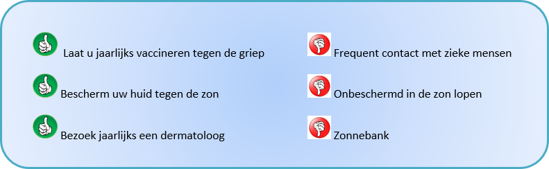
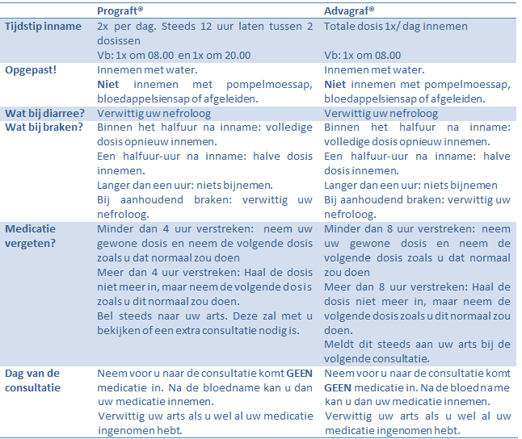
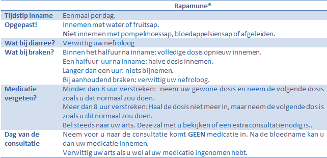
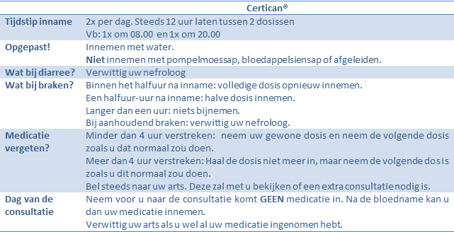
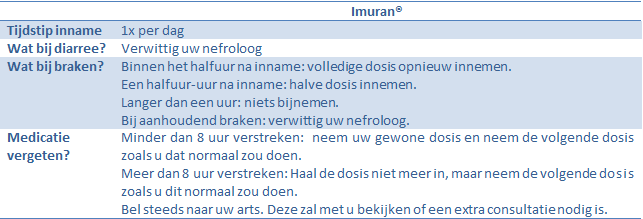
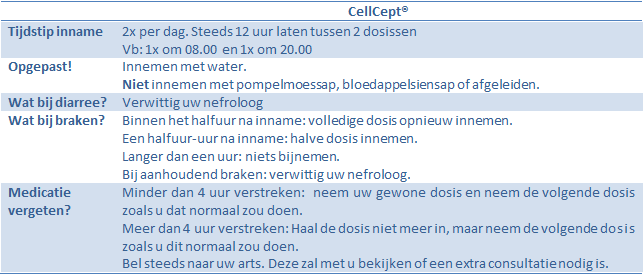
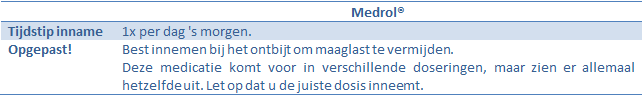
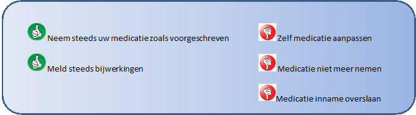
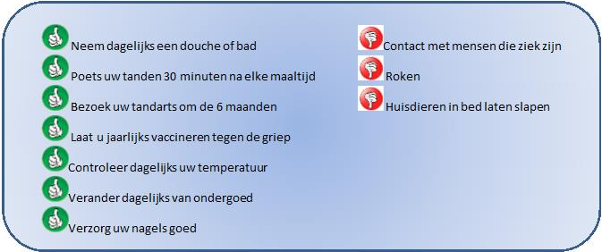

Inleiding
U heeft onlangs een niertransplantatie ondergaan en dit brengt waarschijnlijk heel wat gevoelens bij u te weeg. Vermoedelijk heeft u naast gevoelens van blijdschap ook heel wat vragen rond de transplantatie. Waar moet ik op toezien? Wanneer en hoeveel moet ik op consultatie komen? Hoe lang zal mijn nieuwe nier werken, ...?
Deze brochure is ontwikkeld om u wat meer informatie te geven over het verloop van uw ziekenhuisopname, de raadplegingen nadien en hoe verder te leven na een niertransplantatie. We leggen uit wat het begrip afstoting inhoudt, welke verschillende soorten medicatie er bestaan om dit tegen te gaan, het belang van een correcte inname, ... Daarnaast geven we ook meer uitleg over uw opvolging na de transplantatie
Deze brochure is bedoeld als ondersteuning. Alles wat hierin beschreven staat zal ook uitvoerig met u besproken worden door de leden van het transplantteam (arts, verpleegkundige, transplantcoördinator, maatschappelijk werker, ...). Ook na het lezen van deze brochure kan u met uw vragen steeds bij hen terecht. Zij zullen met plezier uw vragen beantwoorden.
Wij wensen u een spoedig herstel een een aangenaam verblijf in ons ziekenhuis.
Het transplantteam
1. Ons afweersysteem en medicatie
U bent juist getransplanteerd en dit brengt heel wat positieve veranderingen voor u. Indien u voordien in dialyse was, valt dit nu weg. U kan terug een actiever sociaal leven uitbouwen, u kan terug gaan werken, uw dieet zal terug minder strikt zijn,... Een transplantatie wil echter ook wel zeggen dat u een reeks nieuwe geneesmiddelen zal moeten innemen om ervoor te zorgen dat uw nieuwe nier niet afgestoten wordt. In het eerste deel van deze brochure willen we u daarom wat meer uitleg geven over het afweersysteem en welke geneesmiddelen u mogelijks moet innemen.
Ons hele afweersysteem is er op gericht om indringers, bijvoorbeeld sommige bacteriën, te neutraliseren en ons lichaam op die manier gezond te houden. Op dezelfde manier probeert het afweersysteem ook om getransplanteerde organen aan te vallen en af te stoten. Daarom moet u vanaf het moment van de operatie, en nadien levenslang, meerdere geneesmiddelen innemen die het immuunsysteem elk op een specifieke manier onderdrukken of uitschakelen. Onderbreken van de behandeling, zelfs na verloop van jaren, kan ernstige afstotingsverschijnselen en het verlies van het getransplanteerde orgaan tot gevolg hebben. Ook onnauwkeurige inname van de geneesmiddelen, niet in acht nemen van het vooropgestelde tijdsschema, of afwijkingen van de dosis, kan onherroepelijke schade berokkenen.
Er zijn twee types van afstoting, namelijk acute en chronische afstoting. Acute afstoting is een vorm van afstoting die snel en krachtig optreedt. Ze komt voornamelijk voor tijdens de eerste drie maanden na transplantatie. Ook later bestaat er kans op acute afstoting, maar deze is veel kleiner. Chronische afstoting daarentegen is een proces dat jaren in beslag neemt en stilaan de transplantnier aantast. Om de kans op afstoting zo klein mogelijk te houden is het dus belangrijk dat u de werking van uw medicatie en het belang van het schema goed begrijpt voor u het ziekenhuis verlaat. Aarzel ook nooit om uw nefroloog of coördinator te contacteren als u bijkomende vragen zou hebben.
Hieronder vindt u een overzicht van de meest voorkomende geneesmiddelen die het immuunsysteem onderdrukken. Zowel de werking als aandachtspunten en nevenwerkingen worden kort besproken. We bespreken eerst de algemene aandachtspunten.
Let op: U neemt niet alle geneesmiddelen die hieronder beschreven staan, maar slechts een aantal afhankelijk van uw medische toestand. De eerste maanden na transplantatie is de dosier hiervan relatief hoog gezien dan het risico op afstoting het grootst is. Later wordt de dosis van de medicaties afgebouwd en kan in sommige gevallen de behandeling met cortisone zelfs gestopt worden. Contacteer bij bijwerkingen steeds uw arts, vaak zijn er aanpassingen mogelijk.
Immunosupressiva worden gebruikt om het afweersysteem te onderdrukken. Op deze manier wordt voorkomen dat het lichaam de transplantnier zal afstoten. Deze geneesmiddelen zijn echter niet specifiek waardoor uw lichaam ook minder zal reageren tegen door bacteriën en virussen veroorzaakte infecties. U kan met andere woorden sneller ziek worden. Het is daarom belangrijk dat u zichzelf hiertegen beschermt. Vermijd daarom contact met zieke mensen. Raadpleeg steeds uw arts wanneer u zich wil laten vaccineren.
Hij zal voor u nagaan welke vaccincs voor u aangeraden zijn. Naast een verminderde weerstand tegen infecties, is er eveneens een verhoogd risico op het ontwikkelen van sommige soorten kanker. Ons immuunsysteem verhindert normaal de wildgroei van cellen, maar met het onderdrukken van het immuunsysteem wordt deze functie ook verminderd. Er bestaat dus een verhoogd risico op het ontwikkelen van kanker en meer bepaald huidkanker.
Stel daarom in de zomer uw huid niet te veel bloot aan de zon. Bedek deze en/of smeer uw huid steeds goed in met zonnecrème van een voldoende hoge factor. Laat ook steeds jaarlijks uw huid nakijken door een dermatoloog.
1.1. Tacrolimus (Prograft®, Advagraf®)
DOEL: Prograft® en Advagraf ® zijn geneesmiddelen die het afweersysteem onderdrukken zodat de getransplanteerde nier niet afgestoten wordt.
INNAME: De dosis Tacrolimus die u moet innemen, hangt af van uw gewicht en de hoeveelheid medicatie in uw bloed. Deze dosis kan, zeker in het begin, regelmatig aangepast worden. Het is belangrijk dat u deze medicatie altijd op dezelfde manier en op hetzelfde tijdstip inneeemt.
®">NEVENWERKINGEN: Elk geneemsiddel kan nevenwerkingen met zich meebrengen. Pas echter nooit zelf uw medicatie aan indien u nevenwerkingen ervaart. Meld dit steeds aan uw nefroloog en deze kan dan bekijken hoe deze nevenwerkingen het best aangepakt worden.
Volgende nevenwerkingen kunnen optreden bij het gebruik van Tacrolimus: diarree, misselijkheid, braken, beven van de handen, slapeloosheid, suikerziekte, verhoogde bloeddruk, hoofpijn, gezichtsstoornissen.
TERUGBETALING: Zowel Prograft ® als Advagraf ® worden volledig terugbetaald door het ziekenfonds en zijn verkrijgbaar bij de apotheek met een medisch voorschrift.
1.2. Cyclosporine A (Neoral®)
DOEL: Neoral ® is een geneesmiddel die het afweersyste em onderdrukt zodat de getransplanteerde nier niet afgestoten wordt.
INNAME: De dosis Neoral® die u moet innemen, hangt af van uw gewicht en de hoeveelheid medicatie in uw bloed. Deze dosis kan, zeker in het begin, regelmatig aangepast worden. Het is belangrijk dat u deze medicatie altijd op dezelfde manier en op hetzelfde tijdstip inneeemt.

NEVENWERKINGEN: Elk geneemsiddel kan nevenwerkingen met zich meebrengen. Pas echter nooit zelf uw medicatie aan indien u nevenwerkingen ervaart. Meld dit steeds aan uw nefroloog en deze kan dan bekijken hoe deze nevenwerkingen het best aangepakt worden. Volgende nevenwerkingen kunnen optreden bij het gebruik van Neoral®: verhoogd risico op schimmelinfecties van mond en slokdarm, kwetsbare huid, verdikking van het tandvlees, toegenomen haargroei op lichaam en gezicht, hoofdpijn, verhoogde bloeddruk, verhoogde cholesterol in het bloed,beven van de handen, brandend gevoel aan de handen en de voeten.
TERUGBETALING: Neoral ® wordt volledig terugbetaald door het ziekenfonds en is verkrijgbaar bij de apotheek met een medisch voorschrift.
1.3. Sirolimus (Rapamune ®)
DOEL: Rapamune ® is een geneesmiddel die het afweersysteem onderdrukt zodat de getransplanteerde nier niet afgestoten wordt.
INNAME: De dosis Rapamune® die u moet innemen hangt af van de hoeveelheid medicatie in uw bloed. Deze dosis kan, zeker in het begin, regelmatig aangepast worden. Het is belangrijk dat u deze medicatie altijd op dezelfde manier en op hetzelfde tijdstip inneeemt.
®" >NEVENWERKINGEN: Elk geneemsiddel kan nevenwerkingen met zich meebrengen. Pas echter nooit zelf uw medicatie aan indien u nevenwerkingen ervaart. Meld dit steeds aan uw nefroloog en deze kan dan bekijken hoe deze nevenwerkingen het best aangepakt worden.
Volgende nevenwerkingen kunnen het optreden bij het gebruik van Rapamune®: acne, roodheid, beven van de handen, slapeloosheid, vertraagde wondheling, zwelling van de handen en voeten, verhoogd risico op infectie, hoest en kortademigheid, gastro-intestinale klachten, suikerziekte
TERUGBETALING: Rapamune ® wordt volledig terugbetaald door het ziekenfonds en is verkrijgbaar bij de apotheek met een medisch voorschrift.
1.4. Everolimus (Certican®)
DOEL: Certican® is een geneesmiddel die het afweersysteem onderdrukt zodat de getransplanteerde nier niet afgestoten wordt.
INNAME: De dosis Certican® die u moet innemen hangt af vande hoeveelheid medicatie in uw bloed. Deze dosis kan, zeker in het begin, regelmatig aangepast worden. Het is belangrijk dat u deze medicatie altijd op dezelfde manier en op hetzelfde tijdstip inneeemt.
®" width="60%" height="30%">
NEVENWERKINGEN: Elk geneemsiddel kan nevenwerkingen met zich meebrengen. Pas echter nooit zelf uw medicatie aan indien u nevenwerkingen ervaart. Meld dit steeds aan uw nefroloog en deze kan dan bekijken hoe deze nevenwerkingen het best aangepakt worden.
Volgende nevenwerkingen kunnen het optreden bij het gebruik van Certican®: acne, aften, roodheid, zwelling van de handen en voeten, hoest en kortademigheid, vertraagde wondheling.
TERUGBETALING: Certican ® wordt volledig terugbetaald door het ziekenfonds en is verkrijgbaar bij de apotheek met een medisch voorschrift
Let op!! Verwittig steeds uw arts als u een operatie moet ondergaan. Dit geneesmiddel bemoeilijkt sterk de genezing de wonde. Er zal bij een operatie dus moeten overgeschakeld worden naar een ander geneesmiddel.
1.5. Azathioprine (Imuran®)
DOEL: Imuran ® is een geneesmiddel die het afweersysteem onderdrukt zodat de getransplanteerde nier niet afgestoten wordt. De in te nemen dosis wordt bepaald afhankelijk van uw gewicht.
®" width="60%" height="30%">NEVENWERKINGEN: Elk geneemsiddel kan nevenwerkingen met zich meebrengen. Pas echter nooit zelf uw medicatie aan indien u nevenwerkingen ervaart. Meld dit steeds aan uw nefroloog en deze kan dan bekijken hoe deze nevenwerkingen het best aangepakt worden.
Volgende nevenwerkingen kunnen het optreden bij het gebruik van Imuran®: gevoelige huid, gestoorde functie van de lever, daling van de witte bloedcellen, bloedarmoede, maag-en darmklachten, bloedarmoede, leverstoornissen.
Let op!! Er bestaat een belangrijke interactie tussen azathioprine (Imuran®) en allopurinol (Zyloric ®), een medicament dat bij patiënten met hoog urinezuur en jicht wordt gebruikt. Allopurinol vertraagt de uitscheiding van azathioprine en kan op deze manier een soms levensbedreigende toxiciteit veroorzaken. U mag nooit azathioprine en allopurinol tezamen innemen.
TERUGBETALING: Imuran ® wordt volledig terugbetaald door het ziekenfonds en is verkrijgbaar bij de apotheek met een medisch voorschrift.
1.6. Mycophenolaat Mofetil (MMF, CellCept®, Myfortic®,)
DOEL: Cellcept ® / Myfortic® is een geneesmiddel die het afweersysteem onderdrukt zodat de getransplanteerde nier niet afgestoten wordt.
INNAME: Het is belangrijk dat u deze medicatie altijd op dezelfde manier en op hetzelfde tijdstip inneeemt.
®, Myfortic®)" width="60%" height="30%">
NEVENWERKINGEN: Elk geneemsiddel kan nevenwerkingen met zich meebrengen. Pas echter nooit zelf uw medicatie aan indien u nevenwerkingen ervaart. Meld dit steeds aan uw nefroloog en deze kan dan bekijken hoe deze nevenwerkingen het best aangepakt worden.
Volgende nevenwerkingen kunnen het optreden bij het gebruik van CellCept®/ Myfortic ®: misselijkheid, braken, gebrek aan eetlust, diarree, buikkrampen.
TERUGBETALING: CellCept® / Myfortic® wordt volledig terugbetaald door het ziekenfonds en is verkrijgbaar bij de apotheek met een medisch voorschrift.
1.7. Corticosteroïden (Medrol®)
DOEL: Medrol is een ontstekingswerend en antiallergisch geneesmiddel. Het heeft daarbij ook een immunosuppressieve werking en zorg er mee voor dat uw getransplanteerde nier niet afgestoten wordt.
INNAME: Vlak na transplantatie krijgt u hoge dosissen van dit geneesmiddel. Deze zal echter geleidelijk aan afgebouwd worden. Het is belangrijk dat u deze medicatie altijd op dezelfde manier en op hetzelfde tijdstip inneeemt.
®)" width="60%" height="30%">
NEVENWERKINGEN: Elk geneesmiddel kan nevenwerkingen met zich meebrengen. Pas echter nooit zelf uw medicatie aan indien u nevenwerkingen ervaart. Meld dit steeds aan uw nefroloog en deze kan dan bekijken hoe deze nevenwerkingen het best aangepakt worden.
Volgende nevenwerkingen kunnen het optreden bij het gebruik van Medrol®: maaglast en een verhoogde kans op maagzweren, kans op het ontwikkelen van suikerziekte, vocht-en zoutretentie, opgeblazen gezicht, gewichtstoename en verhoogde eetlust, wisselende gemoedsgesteldheid, vertraagde wondheling, broze huid en verlies van botdensiteit.
TERUGBETALING: Medrol ® wordt op hoge dosis volledig terugbetaald en op lage dosiers ten grote dele terugbetaald door het ziekenfonds en is verkrijgbaar bij de apotheek met een medisch voorschrift.
®)" width="60%" height="30%">2. Verwikkelingen na transplantatie
2.1. De nierwerking komt vertraagd op gang
Organen die na wegname een tijdlang in een koude vloeistof bewaard werden en nieren afkomstig van hartdode patiënten kunnen na de transplantatie soms tijd nodig hebben om terug op gang te komen. Dit gebeurt in 10 tot 30 percent van alle niertransplantaties. Bij uitgestelde transplantfunctie in de eerste dagen na de transplantatie kunnen uw behandelende artsen soms beslissen dat nog één of meerdere aanvullende dialyse behandelingen nodig zijn.
In geval van uitgestelde transplantfunctie voor meer dan een week kunnen uw artsen ook moeilijk inschatten of een afstoting de werking van de nier voorkomt. Om deze reden zal in geval van uitstelling van de transplantfunctie voor meer dan een week een nierbiopsie worden gepland. Eenmaal de nieuwe nier op gang komt, zal de langetermijnuitkomst echter vergelijkbaar zijn met organen die direct functioneren.
2.2. Afstoting
Weerstandonderdrukkende medicatie zorgt de laatste jaren voor minder (uitgesproken) afstotingsverschijnselen maar zelfs als u de strikt opgelegde richtlijnen volgt, blijft de kans dat u een episode van een acute rejectie doormaakt toch 15 %. Dit betekent niet dat uw nier verloren is. Met aangepaste medicatie kan rejectie in de grote meerderheid van de gevallenefficiënt behandeld worden en zal de nier herstellen. We spreken dan van een acute rejectie. In het geval een rejectie onvoldoende kan onderdrukt worden zal de werking van de getransplanteerde nier langzaam verder achteruitgaan en zal er op een bepaald moment opnieuw dialysenood optreden. In dit geval spreken we van een chronische rejectie en dit is een onomkeerbaar proces.
De uiteindelijke diagnose wordt gesteld na uitvoering van een nierbiopsie. Standaard wordt dit steeds 3 maanden na de transplantatie gedaan. Nadien kan dit herhaald worden wanneer er tekens zijn van afstoting. Ook indien er vroeger dan drie maand tekens van afstoting zijn, kan er al een biopsie uitgevoerd worden. Volgende tekens kunnen mogelijks wijzen op een afstoting:
- Koorts en rillingen (gebeurt zelden)
- Grieperig gevoel of zich algemeen niet goed voelen
- Pijnlijk en/of gezwollen gevoel in de nierstreek
- Gezwollen benen en voeten
- Ongewone gewichtstoename
- Minder plassen bij normale vochtinname
- Een stijging van het creatinine in het bloed
2.3. Infecties
Door de inname van weerstandonderdrukkende medicatie bestaat er een verhoogd risico op besmettingen, in het bijzonder op virale infecties. Specifieke analyses kunnen deze infecties tijdig opsporen maar een behandeling via intraveneuze weg en een opname in het ziekenhuis zijn in vele gevallen noodzakelijk. Ook bacteriële infecties moeten ernstig aangepakt worden, met bijzondere aandacht voor infecties van het urinestelsel en van de longen.
Om te voorkomen dat u na de transplantatie een infectie oploopt, wordt er na de transplantatie medicatie hiervoor voorgeschreven. Veel gebruikte medicatie hiervoor is Eusaprim® en Valcyte®.
Let op: Voor de terugbetaling van Valcyte heeft u steeds een voorschrift van uw nefroloog nodig. Vraag hier zeker naar bij ontslag uit het ziekenhuis Een goede hygiëne is belangrijk om infecties te vermijden. Hieronder vindt u enkele tips die u hierbij kunnen helpen.
2.4. Heelkundige verwikkelingen
Soms kunnen er problemen optreden die te maken hebben met de ingreep zelf. Hieronder vindt u een aantal van deze problemen.
Nabloeding: hiervoor is er een nieuwe ingreep nodig. Dit komt gelukkig niet vaak voor.
Bloedklonter in de slagader van de nier. Deze complicatie komt erg weinig voor (in één procent van de gevallen). Door een bloedklonter kan er geen bloed naar de nier stromen en krijgt deze geen voedingsstoffen en zuurstof. Een dringende operatie om de bloedklonter te verwijderen is de enige mogelijk oplossing om deze complicatie op te lossen. Vaak is de schade al te ernstig en zal de nieuwe nier moeten verwijderd worden.
Deze verwikkelingen komen voornamelijk de eerste dagen na de transplantatie voor. Een aantal andere verwikkelingen kunnen maanden tot jaren na de transplantatie ontstaan.
Lymfocoele: dit is een ophoping van lymfevocht rond de nieuwe nier. Als dit teveel druk uitoefend op de nier, kan het vocht weggenomen worden via een punctie ( drainage) of met een operatie.
Vernauwing ter hoogte van de urineleider en de blaas. Dit is een complicatie die erg zelden voorkomt, gezien er standaard een stent wordt geplaatst bij de transplantatie. Meer informatie over deze stent volgt verder in deze brochure.
Vernauwing ter hoogte van de bloedvaten. Ook dit is een complicatie die zelden voorkomt. Dit wordt behandeld door de slagader open te blazen met een ballonnetje en een metalen veer, die de slagader openhoudt, achter te laten.
Littekenbreuk of hernia. Ten gevolge van een slechte wondgenezing ter hoogte van de spieren van de buikwand ontstaat er ter hoogte van het litteken een verzwakking en zwelling in de buikwand. Deze verwikkeling kan met een operatie verholpen worden door het plaatsen van een netje in kunststof.
2.5. Diabetes mellitus
Het is mogelijk dat u na uw transplantatie diabetes of suikerziekte ontwikkelt. Dit komt door de medicatie die u moet innemen tegen afstoting. Daarom zal de eerste zes maanden regelmatig het suikergehalte in uw bloed gemeten worden. Dit wordt gedaan aan de hand van een vingerprik. Tijdens uw opname zal dit gedaan worden door de verpleegkundigen, maar wanneer u terug thuis bent, dient u dit zelf te doen. Een verpleegkundige van het diabetesteam zal u komen uitleggen hoe u dit moet doen. Hij/zij zal u ook uitleg geven over het diabetesdieet dat u dient te volgen.
U dient uw suiker geduren zes maanden elke dag éénmaal te meten. Dit zal afwisselend voor het ontbijt, middagmaal en avond eten zijn. Vb: maandag voor het ontbijt, dinsdag voor het middagmaal, woensdag voor het avondeten, donderdag terug voor het ontbijt,....
Gedurende deze zes maanden heeft u recht op terugbetaling van een apparaatje dat de suiker meet en de meetstrips die hierbij horen.
Indien u effectief diabetes zou ontwikkelen na de transplantatie zal ook hiervoor extra medicatie moeten innemen. Het kan zijn dat u pillen moet innemen die de suiker doen verlagen of dat u inspuitingen moet krijgen met insuline, een product dat de suiker in het bloed verlaagt. Ook zal u dan regelmatig bij een specialist moeten komen die uw diabetes opvolgt. We proberen steeds deze afspraken te combineren met een afspraak bij de nefroloog zodat de bezoeken aan het ziekenhuis beperkt blijven.
2.6. Osteoporose
Osteoporose of botontkalking is een complicatie die regelmatig voorkomt. Deze aandoening komt vaak al voor de transplantie voor. Nierproblemen zorgen er namelijk voor dat er calcium uit het bot wordt gehald waardoor deze zwakker worden en makkelijker kunnen breken. Het is tot nu nog niet heel duidelijk of een transplantatie hier beterschap in brengt. Daarom krijgt u calciumsupplementen (CaCit Vit DR3, calciumcarbonaat) en/ of vitamine D ( D-cure, α-leo) voorgeschreven . Daarnaast kan het ook zijn dat er soms een onderzoek zal uitgevoerd worden om naar de samenstelling van uw bot te kijken (= botdensitometrie).
2.7. Maagzweer/maagproblemen
Veel geneesmiddelen die u inneemt zijn belastend voor de maag. Om te voorkomen dat u een maagzweer of andere problemen ontwikkelt zal er een maagbeschermer voorgeschreven worden (vb: Zantac ®, Pantomed®). Indien u toch maagproblemen zou ontwikkelen, is het mogelijk dat de arts beslist om een maagonderzoek te laten uitvoeren. Bij dit maagonderzoek wordt er via de mond een flexibele buis in uw maag gebracht om de maag te inspecteren en te kijen wat het probleem is.
2.8. Huidkanker
Mensen die een orgaantransplantatie hebben ondergaan, hebben een hoger risico om huidkanker te ontwikkelen vergeleken met de algemene bevolking. Dit verhoogde risico is te wijten aan de medicijnen die gegeven worden om afstoting van de transplantnier tegen te gaan. Deze medicijnen, ook wel immunosuppressiva genoemd, onderdrukken het eigen afweersysteem, waardoor kwaadaardige tumoren makkelijker kunnen ontstaan en sneller kunnen groeien. Een van de frequentste plaatsen waar deze tumoren kunnen ontstaan is de huid. Daarom is het zeer belangrijk om de huid goed te beschermen tegen de zon.
De 3 belangrijkste tips voor een goede zonbescherming zijn:
- Vermijd onnodige zonexpositie: vermijd de middagzon (tussen 11u en 15u) en zoek zoveel mogelijk de schaduw op.
- Draag beschermende kledij: lange mouwen en broekspijpen, hoed of petje, UV-beschermende zonnebril.
- Gebruik zonnecrème met een voldoende hoge beschermingsfactor, liefst SPF50+ en herhaal de applicatie om de 2-3 uur. Let op, ook in de schaduw kan men verbranden dus vergeet je niet in te smeren!
- Plaveiselcelcarcinoom: dit is de kwaadaardige huidtumor die het frequentst gezien wordt bij mensen met een transplantorgaan. Mensen met een lichte huidskleur hebben een hoger risico om dit type huidtumor te ontwikkelen, maar dit kan soms ook voorkomen bij mensen met een donkerdere huidskleur. De tumor ziet eruit als een rode ruwe vlek, een korstachtig gezwel of een niet genezende wonde.
- Basaalcelcarcinoom: dit is de tweede meest geziene kwaadaardige huidtumor bij mensen met een transplantorgaan en een lichte huidskleur. Deze soort tumor wordt bijna nooit gezien bij mensen met een donkerdere huidskleur. De tumor ziet eruit als een rode ruwe vlek, een glanzende huidskleurige bobbel of een niet genezende wonde.
- Kaposi sarcoom: dit is de kwaadaardige huidtumor die het frequentst gezien wordt bij mensen van Afrikaanse origine. Meestal zijn er meerdere tumoren aanwezig die eruit zien als donkerpaarse vlekken of gezwellen.
3. Opvolging en consultaties
Een goede opvolging is belangrijk voor de overleving van uw transplantnier. U zal daarom, zeker in het begin, regelmatig op controle moeten komen in het ziekenhuis. In ons centrum maken we een verschil tussen patiënten die minder dan een jaar getransplanteerd zijn (= acute patiënten) en patiënten die langer dan een jaar getransplanteerd zijn (= chronische patiënten). Hieronder vindt u meer uitleg over hoe de opvolging gebeurt bij deze twee groepen.
3.1. Acute patiënten
Na ontslag uit het ziekenhuis komt u op consultatie bij de nefroloog en indien nodig bij de transplantchirurg. Zoals reeds eerder gezegd is dit in het begin zeer frequent. De medicatie dient nog regelmatig aangepast te worden, er wordt nagekeken of de operatiewonde goed geneest, ... Bijkomend is het risico om na de niertransplantatie complicaties te ontwikkelen het hoogst binnen de eerste drie maanden. Deze kunnen tijdens de consultaties snel worden opgespoord en op tijd worden behandeld.
Hieronder vindt u een schema voor de frequentie van de consultaties tijdens het eerste jaar.
Let op: Dit is een standaard schema. Er kan omwille van verschillende redenen van dit schema afgeweken worden.
Na de operatie wordt de wonde uiteraard gesloten. Dit kan door middel van draadjes of nietjes gedaan worden. Indien de wonde goed geneest worden deze draadjes of nietjes 10 tot 14 dagen na de operatie op de consultatie verwijderd. Het kan ook zijn dat uw wonde onderhuids gehecht wordt. In dat geval dienen uw hechtingen niet verwijderd te worden, maar lossen deze vanzelf op.
Tijdens de transplantatie wordt er een JJ-stent geplaatst. Dit is een hol buisje dat in de urineleider van de nieuwe nier wordt geplaatst. Het ene uiteinde hiervan gaat tot in de transplantnier en het andere einde komt tot in de blaas. Dit wordt geplaatst om te voorkomen dat de urineleider verstopt. Na een transplantatie heeft de urineleider die ingeplant is op de blaas namelijk tijd nodig om te herstellen. Deze stent wordt normaal gezien zes weken na transplantatie verwijderd. Dit gebeurt onder plaatstelijke verdoving op de consultatie van urologie. Tot het verwijdern van deze stent zal u antbiotica voorgeschreven krijgen om te vermijden dat u een urineweginfectie oploopt.
Drie maanden na transplantatie wordt er standaard een biopsie van uw tranpslantnier genomen. Er wordt daarbij onder lokale verdoving een stukje weefsel weggenomen. Dit wordt gedaan om vroegtijdige tekens van afstoting op te sporen. Nadien gebeurt dit niet meer routinematig, maar enkel bij vermoeden van afstoting. Ook als er minder dan 3 maanden na tranpslantie tekens van afstoting zijn, zal er een biopsie genomen worden. Voor deze biopsie wordt u opgenomen op de afdeling Nefrologie (A360) en dient u 1 nacht in het ziekenhuis te blijven ter observatie.
Wanneer u naar de consultatie komt, wordt u eerst gezien door een verpleegkundige. Deze zal bij u bloeddruk, pols en gewicht nemen. Daarnaast neemt hij/zij ook bloed bij u. Hiermee willen we uw nierfunctie en de hoeveelheid medicatie in uw bloed meten. Het is daarom belangrijk dat u voor de consultatie nog GEEN medicatie inneemt. U kan deze innemen na de bloedname. Nadat de verpleegkundige u gezien heeft, wordt u gezien door de nefroloog. Deze zal u klinisch onderzoeken en met u bespreken of er al dan niet aanpassingen moeten gebeuren aan uw behandeling. Dit is een goed moment om uw bezorgdheden, vragen, .... te bespreken. Indien u uw dosis van uw geneesmiddelen moet aanpassen, zal u telefonisch gecontacteerd worden zodra de uitslag van de bloedname gekend is.
1 jaar na transplantatie wordt er een jaarbilan gepland. Dit zijn twee dagen waarop er heel wat onderzoeken gepland worden om na te gaan of alles in orde is met u. Deze onderzoeken kunnen ambulant gebeuren, waarbij u dan 2 dagen naar het dagziekenhuis (A300) gaat of u kan hiervoor ook opgenomen worden op de afdeling nefrologie (A360). Na alle onderzoeken vindt er een afrondende consultatie bij de nefroloog plaats waarop de resultaten van de onderzoeken worden besproken. Dit jaarbilan wordt, zoals de naam doet vermoeden, jaarlijks opnieuw gepland rond de datum van uw transplantatie.
3.2. Chronische patiënten
Vanaf 1 jaar na transplantatie wordt u beschouwd als een chronische patiënt. U hoeft vanaf dan slechts 1 keer om de 2 maanden naar de consultatie te komen. De organisatie van deze consultatie verloopt iets anders dan deze van de acute patiënten. Gezien u slechts 1 keer om de 2 maanden komt, wil de nefroloog graag zoveel mogelijk informatie zodat deze, indien nodig, uw therapie tijdens de consultatie kan aanpassen. Er wordt daarom geen bloed genomen tijdens de consultatie, maar al enkele dagen hiervoor zodat de resultaten al bekend zijn op de dag van de consultatie. Op deze manier kan de arts gerichter uw behandeling opvolgen, bijsturen en de resultaten ineens met u bepsreken.
U krijgt dus als chronische patiënt twee afspraken. Een afspraak voor een bloedname, die uitgevoerd wordt op de dienst bloedafname van ons ziekenhuis en een afspraak voor de consultatie. Voor de afspraak van de bloedname geldt ook dat u uw medicatie nog niet mag ingenomen hebben voor de bloedname. U neemt deze pas in nadat de bloedname gebeurd is. Op de dag van de consultatie neemt u uw medicatie zoals gewoonlijk gezien er dan geen bloed zal genomen worden. U kan er ook voor kiezen om de bloedname door uw huisarts of een labo te laten nemen dichter bij u in de buurt. Verwittig de consultatieverpleegkundige hiervan en zij zal u de nodige papieren meegeven om de bloedname elders uit te laten voeren.
Net zoals bij de acute patiënten zal de consultatieverpleegkundige bloeddruk, pols en gewicht bij u nemen. Daarna wordt u ook gezien door de nefroloog die klinisch zal onderzoeken en aanpassingen zal doen aan uw behandeling indien nodig.
3.3. Consultatiedata
Hieronder vindt u een ovezicht van dagen waarop er consulaties plaats vinden.
Acute patiënten:
- Maandag voormiddag van 08.30 tot 12.30
- Vrijdag voormiddag van 08.30 tot 12.30
- Maandag voormiddag van 08.30 tot 12.30
- Dinsdag voormiddag van 08.30 tot 12.30
- Vrijdag voormiddag van 08.30 tot 12.30
Plaats: Route 781
Contactgegevens: telefonisch via 02/ 477 60 99 of stuur een mail.
4. Veel gestelde vragen
- Hoe lang moet ik in het ziekenhuis blijven?
Dit varieert van persoon tot persoon en hangt af van verschillende factoren. Ten eerste moet uw nier voldoende functioneren. Daarnaast moet u ook fysiek voldoende hersteld zijn van de operatie zodat u thuis, eventueel met hulp, voor uzelf kan zorgen. Tot slot moet u ook voldoende ingelicht zijn over uw medicatie en in staat zijn deze zelf klaar te zetten en in te nemen. Gemiddeld duurt een opname zonder complicaties 10 dagen.
- Hoeveel zal ik zelf moeten betalen voor een niertransplantatie?
Dit hangt ook wat af van mutualiteit tot mutualiteit. Sommige ziekteverzekering betalen meer zaken terug dan andere. Globaal gezien betaalt iemand met een hospitalisatieverzekering zonder verhoogde tegemoetkoming rond de 500 euro. Personen met een hospitalistatieverzekering met verhoogde tegemoetkoming betalen rond de 250 euro. Personen zonder ziekteverzekering betalen rond de 37.000 euro.
Let op! Dit zijn standaard bedragen en bevatten niet bloed- en andere onderzoeken die eventueel extra aangevraagd worden.
Let op! Zorg steeds dat uw ziekte - en hospitalisatieverzekering niet verlopen is. Informeer u hiervoor bij u mutualiteit.
- Wanneer mag ik terug rijden na een transplantatie?
De eerste maand na uw transplantatie geldt een rijverbod. Er wordt geteld vanaf uw opnamedatum. Nadien kan u een rijgeschikheidsattest vragen aan uw behandelende arts. Deze heeft altijd de eindbeslissing en kan eventueel een langer rijverbod opleggen. Met uw geschiktheidsattest dient u naar het gemeentehuis te gaan om een nieuw rijbewijs aan te vragen. U kan best ook altijd een kopie naar uw verzekeringsmaatschappij sturen en laten weten dat u een zware medische ingreeft heeft ondergaan. U zal hierdoor niet meer verzekeringen te hoeven betalen dan voordien.
- Ik moet heel regelmatig naar het ziekenhuis komen. Krijg ik een vergoeding voor mijn verplaatsingen?
Het eerste jaar na transplantatie wordt u beschouwd als een acute patiënt en heeft u recht op een parkeerkaart van het UZ Brussel waarmee u gratis kan parkeren. Na een jaar vervalt deze kaart, omdat u dan veel minder frequent naar het ziekenhuis moet komen. U dient dat zelf uw vervoersonkosten te betalen. Informeer u echter ook bij uw ziekenfonds. Sommige hiervan betalen uw vervoersonkosten terug. Indien dit het geval is, kan u bij de arts of consultatieverpleegkundige een attest met vermelding van de consultatiedata verkrijgen.
- Wanneer mag ik terug werken na een transplantatie?
Na drie maanden kan u terug beginnen werken wanneer zowel de nefroloog, de adviserend geneesheer van uw mutualiteit en uw werkgever akkoord gaan. In het begin zal voltijds werken vaak moeilijk zijn en kan er gestartd worden met deeltijds te gaan werken. Na een jaar zou u moeten in staat zijn om terug voltijds te gaan werken. Het kan echter zijn dat u door omstandigheden ( vb:fysiek te zwaar) u voormalige job niet meer uitvoeren. Herscholing kan dan een oplossing zijn.
- Mag ik seks hebben en zo ja vanaf wanneer?
Er is geen enkel bezwaar tegen seksuele activiteit wanneer u en uw partner er zelf aan toe zijn.
- Mag/kan ik zwanger worden na een transplantatie?
Na een transplantatie keert de vruchtbaarheid bij de vrouw vaak terug. U zal als vrouw terug ongesteld worden en kan terug zwanger worden. De eerste twee jaar na een transplantatie wordt echter een zwangerschap afgeraden omdat er tot dan nog vaak hoge dosissen medicatie moeten ingenomen worden die schadelijk kunnen zijn voor de foetus. U dient daarom steeds voorbehoedsmiddelen te gebruiken. U kan in de meeste gevallen dezelfde anticonceptiepil gebruiken als voor de transplantatie. Bespreek dit zeker met uw behandelende arts vooraleer u het ziekenhuis verlaat.
Bespreek een kinderwens daarom reeds als u op gesprek komt op de pretransplantraadpleging. U kan en mag zwanger worden, maar STEEDS na overleg met de artsen, onder strikte medische begeleiding en een aanpassing van uw medicatie voorafgaand aan de zwangerschap
- Wanneer mag ik terug op reis gaan?
De eerste maanden na een transplantatie kan u best nog niet op reis gaan. U lichaam moet nog herstellen van de operatie en zich aanpassen aan de medicatie die u neemt. U moet de eerste maanden ook nog dikwijls naar het ziekenhuis komen ter controle. Na enkele maanden kan u echter zonder probleemen op reis gaan. Hou er wel rekening mee dat u een bestemming uitkiest waar een goede hygiëne kan gegarandeerd worden.
Let op! Zorg steeds dat u voldoende medicatie mee heeft op reis. Vraag daarom op voorhand al voldoende voorschriften aan uw arts. Vraag ook een attest aan uw aarts waarop staat dat u altijd uw medicatie bij u moet houden.
Let op! Neem zowel medicatie mee in uw handbagage als in uw reiskoffer. Op die manier heeft altijd medicatie mee in het geval dat er iets zou misgaan met uw reiskoffer.
5. Mijn donor
Een laatste hoofdstukje willen we wijden aan uw donor. Sommige patiënten hebben veel vragen over hun donor. Wie was hij of zij? Hoe is hij/zij gestorven? Van waar kwam de donor? Het is echter niet evident om op deze vragen een antwoord te kunnen geven. In België is de wetgeving namelijk zo dat de identiteit van donor en acceptor voor elkaar en hun familie geheim moet blijven.
Als hulpverleners krijgen wij ook nooit de identiteit van een donor te weten. De nabestaanden van uw donor ontmoeten of persoonlijk contacteren is dus niet mogelijk. Indien u echter de behoefte heeft om een brief te schrijven of een boodschap door te geven aan de nabestaanden van uw donor, kan u dat altijd aan de transplantcoördinator van uw centrum bezorgen.
Hij/zij zal dit bezorgen aan het centrum van uw donor die op hun beurt dit kunnen doorgeven aan de nabestaanden van uw donor. Let wel dat u uw naam niet schrijft op een brief, want ook omgekeerd is het niet toegestaan dat de nabestaanden de identiteit van de ontvangen personen kent. Contacteer de transplantcoördinator als u hier nog vragen rond heeft.
Tot slot
Het leven na een niertransplantie brengt, naast het wegvallen van de dialyse, heel wat veranderingen met zich mee. Met deze brochure hebben we geprobeerd u zo goed mogelijk hierover te informeren. Belangrijk om te onthouden is dat u met al uw vragen steeds terecht kan bij alle leden van het transplantteam.